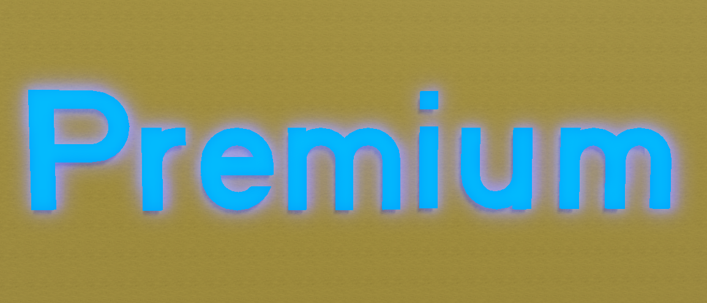

Всем привет! Надеюсь вам понравился первый пост и весь сайт в целом! Сейчас я бы хотел рассказать про обновление в John Doe's logic (Если не знаете что это, то перейдите сюда. Ну так вот. Дело в том, что мне нравится больше всего лето из всех времён года, поэтому я всегда к созданию летних лобби подхожу более серьёзнее и стараюсь делать их как можно лучше. Этот год не стал исключением, поэтому давайте я введу в курс дела, что в итоге было добавлено.
Первое что о чём я бы хотел рассказать, так это о бассейне. В прошлом году в нём нельзя было плавать, просто был полупрозрачный, проходимый блок. И тогда вы просто стояли на дне бассейна. Сейчас же в байссейне настоящая вода, и вы можете плавать в ней и наслаждаться летом. Кстати, помните небольшой паркур в лобби? Так вот, теперь если вы его пройдёте, то сможете спрыгнуть сверху в воду! Хорошо, с водой закончили, давайте перейдём к следующему.
Шляпы и премиум были удалены с игры. Может для некоторых эта очень ужасная новость, но увы так пришлось сделать по следующим причинам. Во первых, шляпы банально не нужны, ибо раньше до обновления системы уровней в одной игре были все уровни и если вы надевали шляпу, то проходили вместе с ней уровни. Сейчас же, эту шляпу вы могли носить только в лобби и нигде больше. Во вторых, шляпы просто не используются. Их почти никто не надевает, а искать шляпы довольно трудно, поэтому зачем напрягаться если всё равно их никто не наденет? Этих причин уже достаточно почему я их удалил. Теперь вместо шляп я найду альтернативу, чтобы компенсировать утраченное.

"Премиум". Как много было вложено в это слово, но к сожалению премиум оказался провальным. То ли из-за своей цены в 65 робуксов. То ли из-за отсутствия контента в нём. То ли из-за самой идеи премиума. Изначально премиум должен был давать уровни, но потом я решил что дополню его новыми функциями, и в итоге было добавлено: Уровни, шляпы, "Премиум" текст над головой, блокси колу, синий фонарик, золотой попкорн, доступ к тестовому серверу, синие таблички на онлайн уровнях и ВИП уровень "Побег из кинотеатра". Цена премиума каждый месяц падала на 5 робуксов. Зачем я вообще говорю историю премиума? Скорее всего вы уже хотите узнать причину. А причина на самом деле проста. Просто премиум никто не покупал, да и мне было лень каждые 2 месяца делать один премиум уровень. Я итак ВИП уровни не делаю, а тут ещё и премиум в подарок к работе. Нет уж спасибо.
Ну а на этом всё! Спасибо за то что дочитали этот пост! К сожалению я занят разработкой этого сайта + надо делать продолжение этой игры и на JDL у меня мало времени, но надеюсь что скоро я сделаю новое обновление! Всего хорошего!
 Предыдущий пост
Предыдущий пост